Histórico
Lucro de cada período, melhor intervalo (MELHOR) e pilha de prosperidade (PROSPERIDADE).
Hash · pilha amortizada · programação dinâmica
Fechamento e proximidade
Fechar depósitos abaixo da tolerância (REMOVER) e achar o par mais próximo (PAR).
Heap com alteração de chave · divisão e conquista
Rede de rotas
Menor custo de um depósito aos demais (DIST) num grafo que cresce e encolhe.
Grafo esparso · Dijkstra com o mesmo heap
main consome a entrada e chama executar_lote uma vez por período.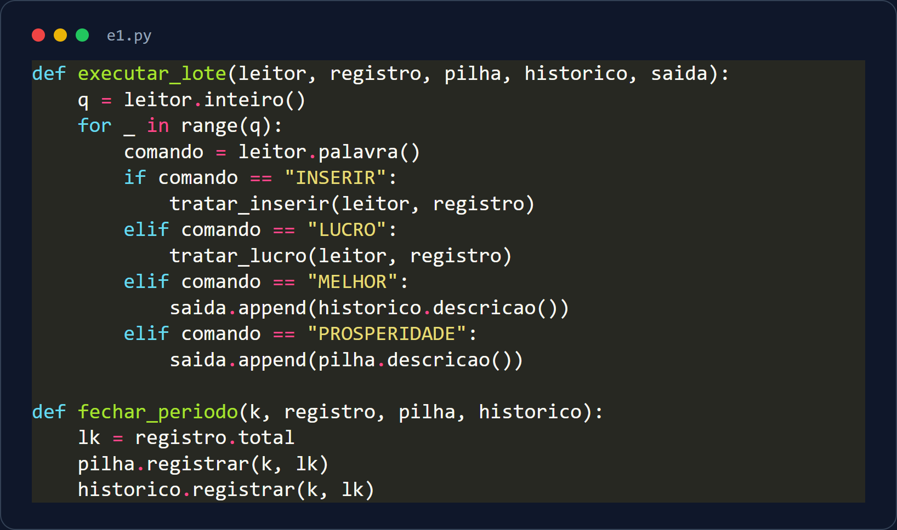
dict (tabela hash).total, a soma de todos os lucros.novo − antigo).Lk = total, sem percorrer depósitos.Complexidade: INSERIR e LUCRO em O(1) esperado; obter Lk em O(1). Espaço O(n).
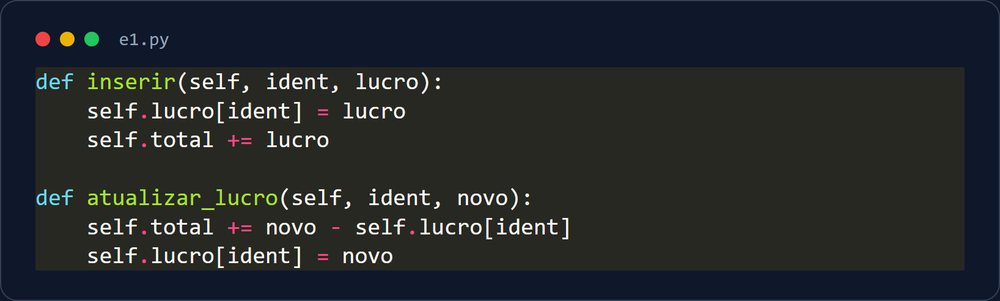
(k, Lk).Amortizado O(1): cada período empilha no máximo 1 elemento, e cada elemento sai uma única vez. Em P períodos são ≤ P desempilhamentos no total (pior período isolado: O(h)).
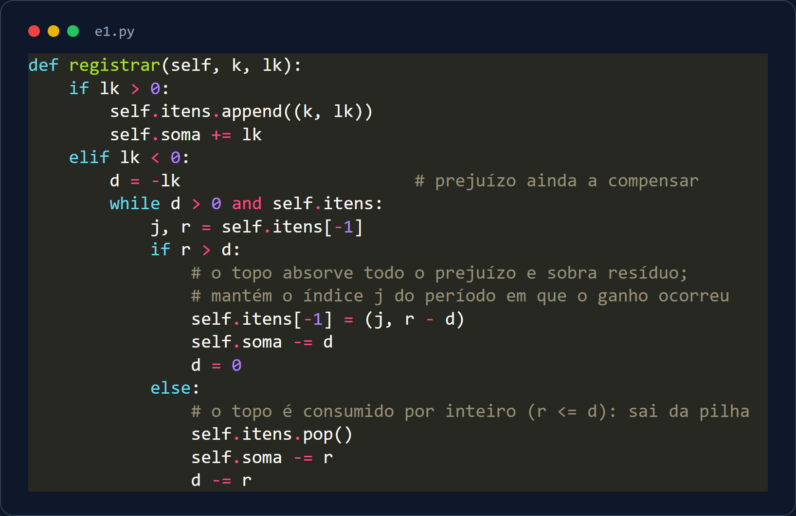
suf(k) = Lk + max(0, suf(k−1)): estende o intervalo corrente ou recomeça em k.≥ 0: no empate fica o menor i.j.Complexidade: registrar um período e responder MELHOR em O(1), com 5 inteiros de estado (espaço O(1)); não guardamos o histórico.
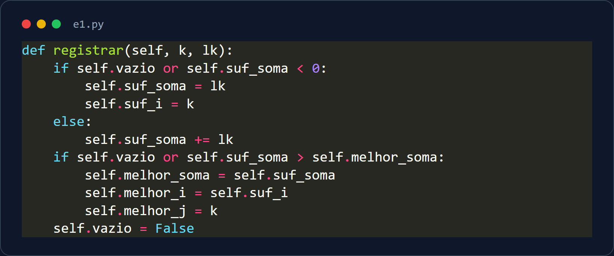
| Comando | O que faz | Custo |
|---|---|---|
| INSERIR | cria no dict, soma ao total, descarta as rotas | O(1) esperado |
| LUCRO | atualiza o total pela diferença | O(1) esperado |
| MELHOR | imprime i j S do estado de Kadane | O(1) |
| PROSPERIDADE | imprime h b s i r (ou 0) | O(1) |
| Fechar período | Lk = total → pilha e Kadane | O(1) amortizado |
Juntando tudo: cada período fecha com Lk = total, que alimenta duas estruturas independentes: a pilha (PROSPERIDADE) e o Kadane (MELHOR). O programa inteiro roda em tempo linear no número de comandos (O(1) por comando); as rotas são só puladas na entrada.
dict pos (id → posição) acha qualquer depósito sem varrer o heap._subir); se aumentou, desce.pos.Complexidade: achar o id O(1) esperado + reposicionar O(log n). Por isso não usamos heapq, que não altera a chave de um elemento qualquer.
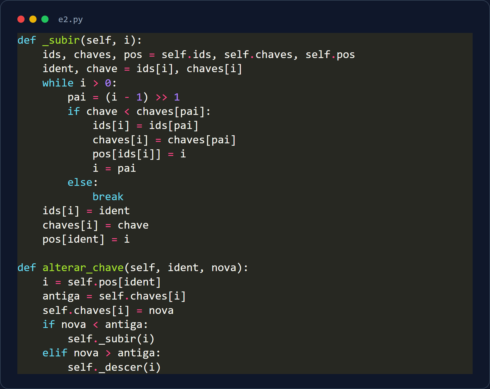
lucro < T (estrito), extrai a raiz, apaga o depósito e conta.≥ T, ninguém mais está abaixo: para na hora.Complexidade: O(k log n) para k removidos: só toca em quem será fechado, nunca nos n depósitos todos. Depósito abaixo de T continua vivo até o REMOVER.
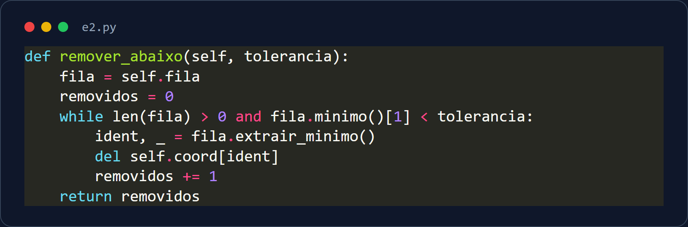
Por quê? Comparar todos os pares é O(n²). Dividindo, o trabalho de cada nível é linear e há log n níveis.
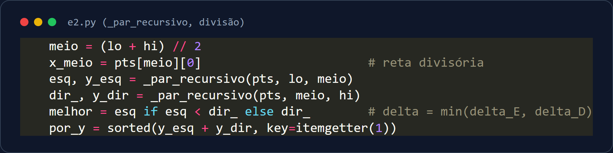
dy < δ.isqrt(d²) (+1 se não for exata).Complexidade: T(n) = 2T(n/2) + O(n) = O(n log n) por consulta. Sem matriz nem heap de distâncias; guardamos só o último resultado (cache).
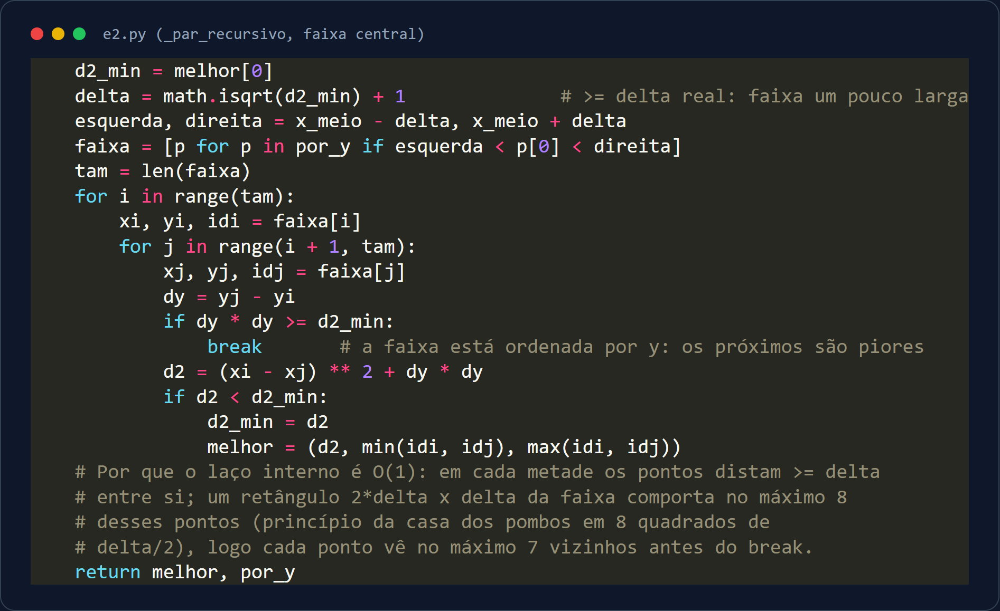
| Comando | O que faz | Custo |
|---|---|---|
| INSERIR | entra no heap e nas coordenadas; invalida o cache | O(log n) |
| LUCRO | reposiciona no heap (não invalida o cache) | O(log n) |
| REMOVER | extrai da raiz enquanto lucro < T; imprime a quantidade | O(k log n) |
| PAR | divisão e conquista; imprime a b d | O(n log n) · cache O(1) |
Juntando tudo: o heap serve de registro de depósitos e de índice de lucros; o PAR só depende das coordenadas dos vivos. O cache é descartado só quando o conjunto de vivos muda (INSERIR ou REMOVER que fecha ≥ 1), então LUCRO não força recalcular.
saida[u] = {v: custo}: rotas que saem de u.entrada[v] = {u}: quem tem rota para v.saida[u] e entrada[u], apagando u dos vizinhos, e depois apaga u.Por que duas listas? Só com a de saída, achar quem chega em u custaria O(n + m). Com as duas, remover custa O(grau de u). Matriz de adjacência gastaria O(n²) de espaço; a lista usa O(n + m).
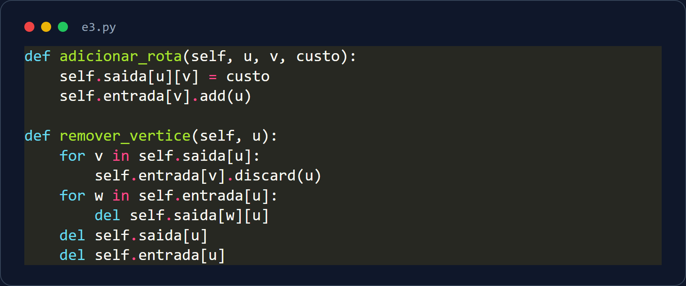
dist[s] = 0 e s no heap.dist[u] + c < dist[v], atualiza v (decrease-key; insere se for novo).Por que funciona: com custos ≥ 1, nenhum caminho por vértice ainda aberto pode ser mais barato que o menor provisório.
Complexidade: n extrações + até m decrease-keys, cada um O(log n): O((n + m) log n).
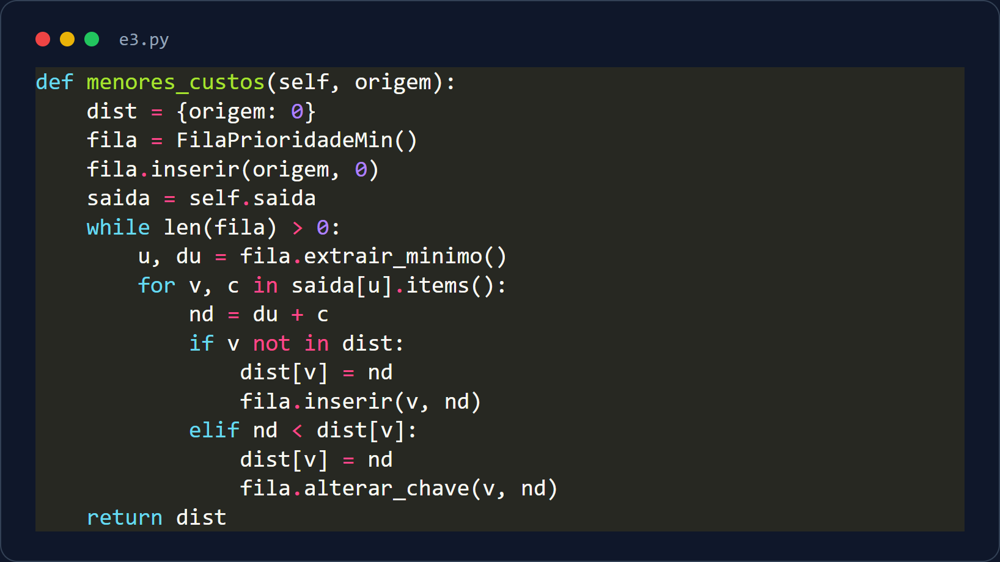
-1.Juntando tudo: REMOVER usa o heap de lucros (E2) e apaga o depósito do grafo; DIST usa outra instância da mesma classe de heap. INSERIR: O(log n + r); REMOVER: O(k log n + graus); DIST: O((n+m) log n + n log n).
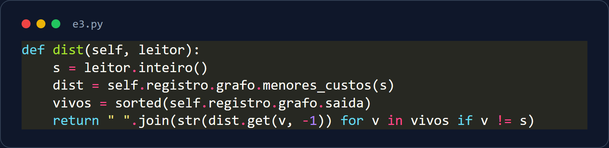
| Operação | Estrutura / algoritmo | Custo |
|---|---|---|
| Registro por id | tabela hash (dict) | O(1) esperado |
| Lk, PROSPERIDADE, MELHOR | acumulador, pilha, Kadane | O(1) (pilha: amortizado) |
| LUCRO / INSERIR | heap indexado | O(log n) |
| REMOVER | heap: extrai enquanto lucro < T | O(k log n + graus) |
| PAR | divisão e conquista + cache | O(n log n) |
| DIST | Dijkstra com o mesmo heap | O((n + m) log n) |
n = depósitos vivos · m = rotas vivas · P = períodos · h = altura da pilha · k = removidos. Nenhuma operação varre todos os depósitos sem necessidade.
Limite honesto: o limite de tempo da correção é desconhecido; e2 e e3 são os que mereceriam otimização adicional se ele for apertado.